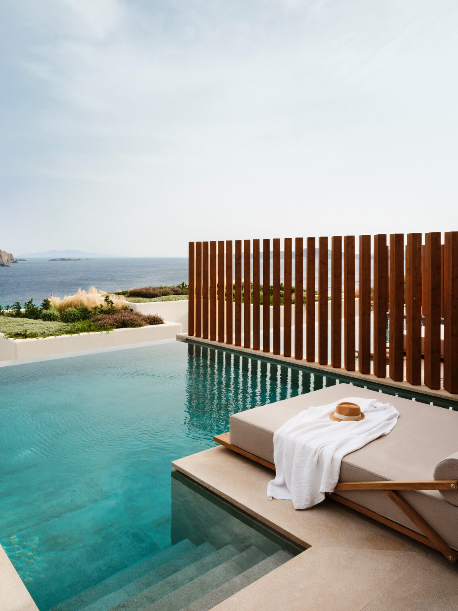
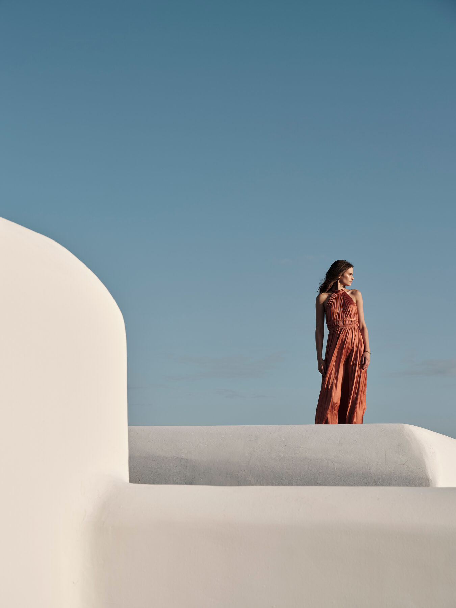
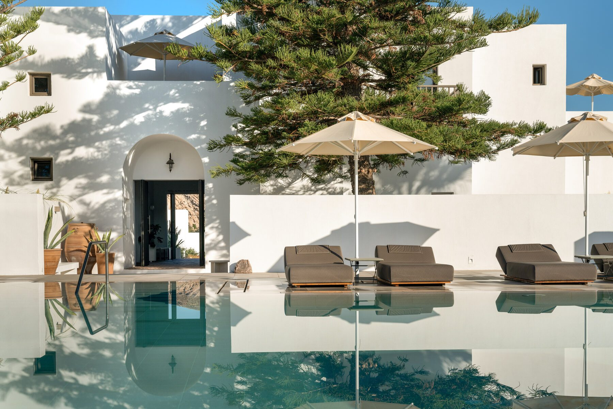
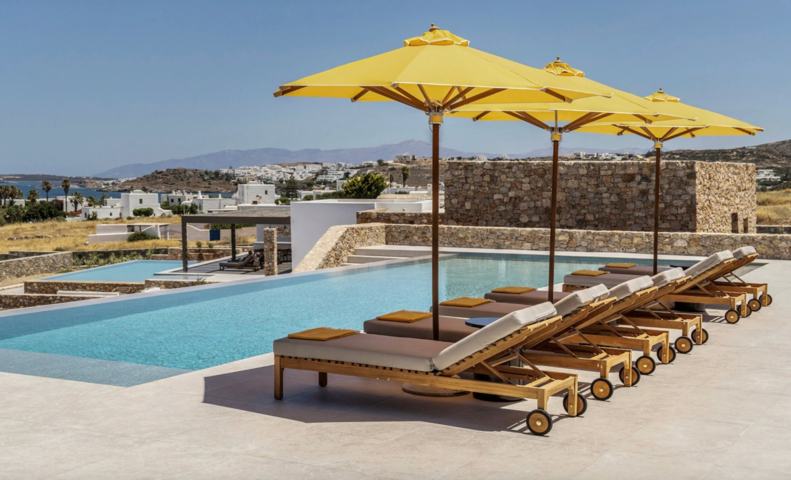
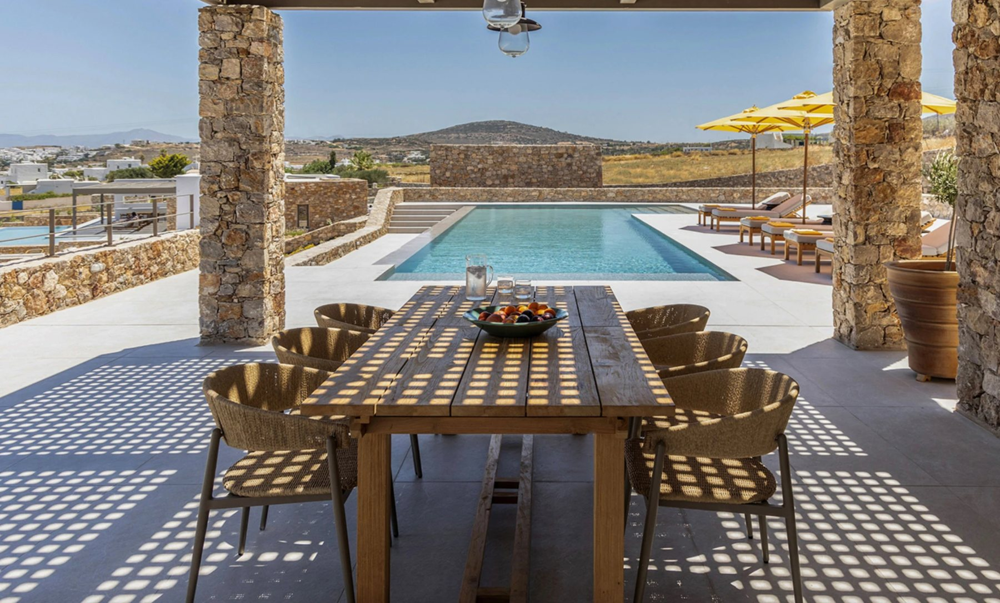
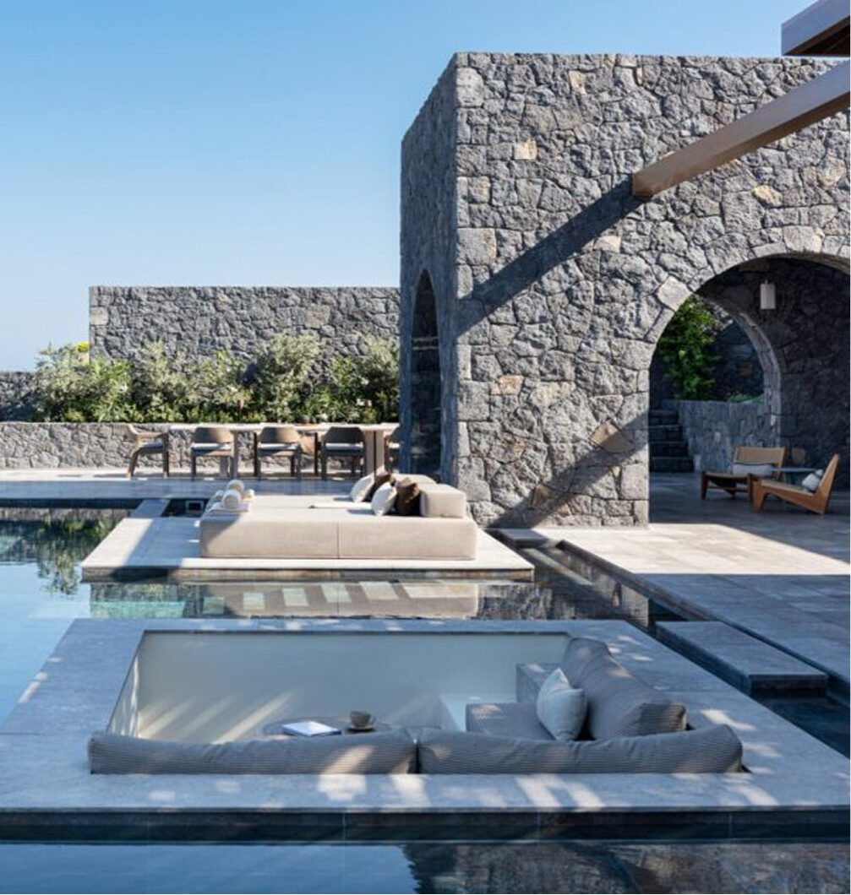
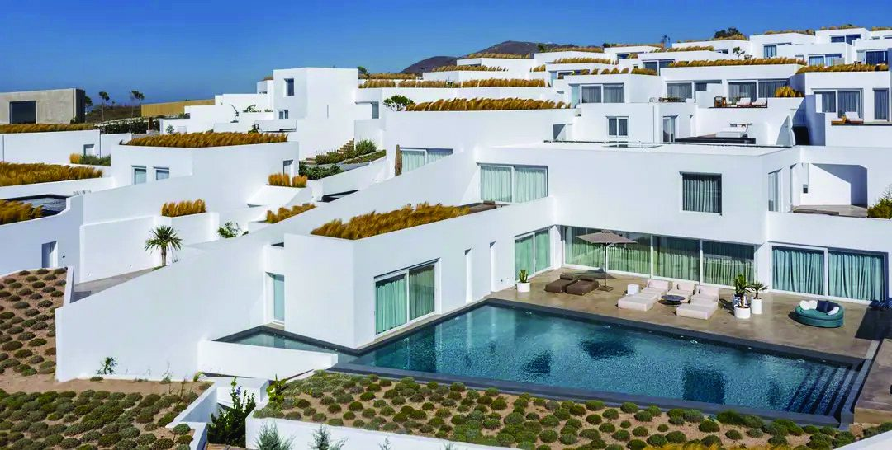
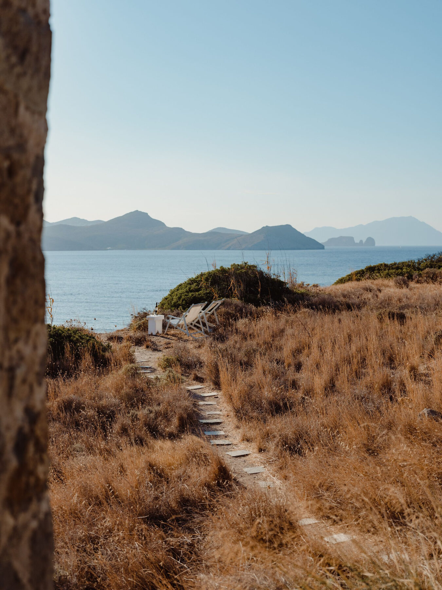

A Private Greece Proposal
Three weeks, three islands and one big birthday. Mykonos, Paros and Santorini, August 21 to September 11, 2027.
Prepared For
Three weeks in the islands, your friends flying in and out as they can, and the birthday itself on a day when nobody has to pack a bag.
Stephanie, the route runs north to south, with one short boat ride between each stop. Your birthday, Saturday September 4, lands in the middle of the Paros stay. It's also Labor Day weekend, so it's the easiest weekend for friends to fly in. Each stop has a home base for you and whoever is staying longest, with rooms nearby for anyone joining for a few nights.
The Route
21 nights · one hotel per island · friends join for any stretch
Every stop can grow or shrink by a night. Friends can arrive and leave on any day except Saturday, September 4.
Stop One · August 21 to 29
The kickoff
Start in the north with the island at full swing, then only head south from here.

On a protected bay · adults only, 17 and up
The Bill & Coo I'd always choose. The villas and suites are huge and genuinely private, right on the water, several with spectacular private pools. There's a private beach club with Beefbar for lunch, and the best breakfast I had anywhere in Greece. The bay is sheltered, so the August winds barely reach the pools.
My review
Near Mykonos Town
The sister hotel, with the same warm team and my Best Breakfast award. It's walking distance to dinners and nights out in town. It's a great place for friends who come for a few nights to book their own room and still be part of the group.
My reviewDays Out
Keith's take: Bill & Coo is the group that consistently out-executes the rest of Mykonos, and it took my Best Service award for the island. For a group, that's the thing that matters most.
Stop Two · August 29 to September 6
The birthday
A one-hour boat ride south, and the stop where everyone comes together.

Just outside Naoussa
Maybe my favorite stay in the Cyclades as a design lover. The light at twilight is magical, the staff learn your name and how you like things, and the food is fantastic. You also get free use of the beach club at Cosme, its sister hotel.
My review
On the hill above the hotel
Brand-new three-bedroom villas with sea views and big private pools, plus everything the hotel offers. In peak season they run about $3,000 to $3,500 a night, which is reasonable at this level when it's split between friends. Two or three villas, plus suites in the hotel, can fit about 15 of you.
More on ParilioOne request when we book: one of the three Sun Suites sits up at the villas, with ocean views and a huge private pool. That's the one I'd put you in.
Days Out
Labor Day Weekend · Paros
The weekend friends fly in for. These are ideas to react to, not a fixed schedule.

ThursdaySep 2
A 40-minute flight from Athens, or the ferry. Everyone is met at the airport or port and driven straight to Parilio.
FridaySep 3
Drinks at the villas as the last arrivals come in, then a long dinner by the harbour.
SaturdaySep 4
A slow breakfast, then a private boat day to Antiparos and Despotiko. Back for sunset, then a private chef dinner for the whole group at a long table on the villa terrace.
SundaySep 5
The beach club at Cosme, a massage and nowhere to be.
MondaySep 6
Weekend friends fly home, and the core group heads south to Santorini.
Stop Three · September 6 to 11
The finale
Five slow days and the best sunset in Greece. September is a better month here than August.

Just outside Oia, above Ammoudi Bay · 53 rooms
My favorite hotel across nine islands, and one of the best stays of my life. It's quiet and private, with gardens behind volcanic-rock walls. Because it isn't inside the caldera, you watch the sun set into the open Aegean. The two-bedroom pool suites are the star, and Omnia was the best hotel restaurant of my whole trip.
My review
Next door to Epitome · 114 suites and villas
A real resort, and the best hotel on Santorini for a room block. Every room has a private pool, and the Eden Villa sleeps up to 12. Pacman, with live music, and Beefbar are on property, so there's more of a scene. That's great if the group still wants a party.
My reviewHow I'd choose: if it's you and a handful of close friends by this point, Epitome. If eight or more are staying to the end and want some energy, Arcadia. They sit side by side, so either way you can have dinner at Omnia. My full Arcadia vs. Epitome comparison.
Days Out
The Alternative

Southwest of Paros
Milos is beautiful and much quieter, with standout beaches and a great boat day out to Kleftiko. It fits this route, since it's south of Paros. The trade-offs are that there are very few villas at this level, fewer ferries, and only small planes to Athens for the flight home.
My Milos guideMy honest read. For a group finale, Santorini is easier. The hotels are better suited to a group, and the flights home are simpler.
If Milos is calling you, it works well for you and two or three friends. A bigger group gets harder to house and move.
The Journey
Arrival
Fly to Athens, then a 40-minute flight to Mykonos. A private car meets you and takes you to Bill & Coo.
In Between
Mykonos to Paros on a private boat for the group, about an hour, with no ferry crowds. Paros to Santorini on the fast ferry or a private boat.
Departure
Fly home from Santorini, which has the most connections of the three, via Athens or a European hub.
Going north to south means every move is short and in one direction. Each stop is eight nights except the last, so you never feel like you're always packing.
For Friends
Everyone flies via Athens to whichever island the group is on, with transfers arranged so people land in groups and share cars.
The Wind
The August meltemi can cancel fast ferries. I'll leave a cushion on travel days and keep a backup boat or flight ready.
The Practical Part
The best villas for late August book early, so I'll hold your home base now and add friends as they commit.
Pricing Once you're happy with the route, I'll quote each hotel for these exact dates, along with group rates and deposit terms. The Parilio villa figure above is the typical peak-season rate. Every other price comes from the hotels.
Tell me what you love and what you'd change. Once the route is set, I'll lock the home bases and send you a simple sign-up your friends can use to pick their stops.
Email Keith